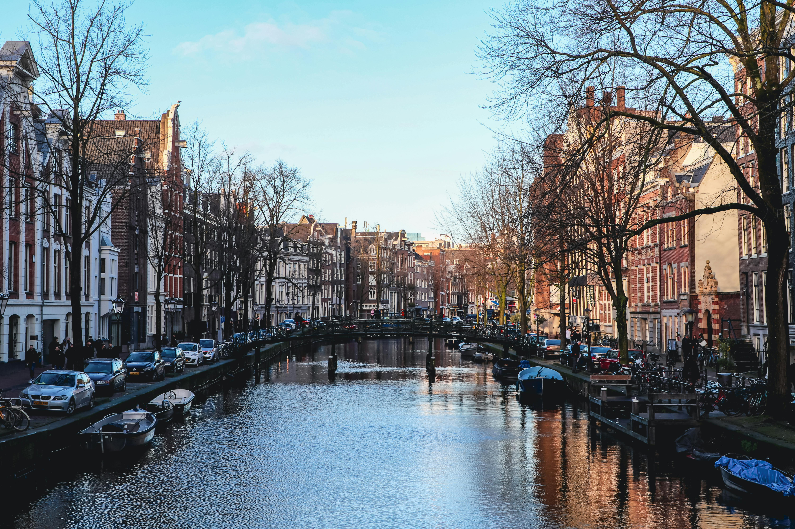

Amsterdam
Descubriendo los canales y la magia de los Países Bajos.

Viajo por el mundo compartiendo historias reales y ayudo a marcas turísticas a conectar con su audiencia.
Trotant nació como un espacio para documentar mis pasos por el mundo, uniendo mi pasión por viajar y el marketing digital.


Descubriendo los canales y la magia de los Países Bajos.
Historia caballeresca y aguas cristalinas en el Mediterráneo.